Projeto de Controladores Usando Root Locus
Aula de 07/05/2026
Projeto de Controladores Usando Root LocusIniciando Seção de Trabalho no MatlabEstudo de CasoPlanta UsadaRequisitos de Controle1) Controlador ProporcionalControle Proporcional para resposta criticamente amortecidaControle Proporcional para resposta sub-amortecidaControle Proporcional Limitando ErroResumo gráfico Controladores Proporcionais2) Controlador Somente Ação IntegralComparando Integrador "puro" com ProporcionalEncerrando Seção de Trabalho
Iniciando Seção de Trabalho no Matlab
>> cd('/Volumes/DADOS/Users/fpassold/Documents/UPF/Sistemas de Controle/2026_1') % chaveando para diretório desejado>> diary aula07052026.txt % "dump file" dos comando usadosEstudo de Caso
A ideia é avaliar diferentes controladores para um mesmo processo ou planta.
Será percebido que alguns tipos de controladores vão deixar à desejar quanto à requisitos de controle. Outros controladores vão permitir atingir os requisitos de controle.
A ideia é perceber as limitações de cada controlador, quando ocorrem e perceber alguma forma de solucionar estas limitações.
Planta Usada
Neste semestre vamos experimentar com o seguinte processo ou planta:
Trata-se de um processo de 3a-ordem, do tipo 0, com um par de pólos mais dominantes (em
Ingressando a planta no Matlab:
>> G=tf(72,poly([-2 -6 -12]));>> zpk(G) % para verificação
ans = 72 ------------------ (s+12) (s+6) (s+2) Continuous-time zero/pole/gain model.
>> dcgain(G) % por curiosidadeans = 0.5Repare que esta planta possui um ganho DC baixo,
Requisitos de Controle
Temos que definir requisitos mínimos de controle. Então vamos supor que ao fecharmos a malha para controlar este sistema, é desejado:
2 tipos de resposta:
Criticamente amortecido (
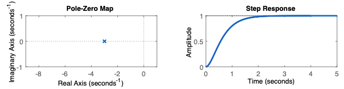
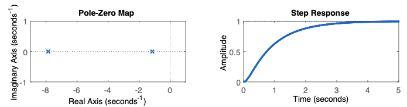
Sub-amortecido (
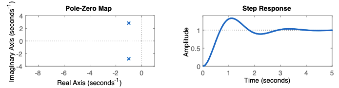
Inicialmente (com base no controlador Proporcional) vamos comparar o
Normalmente o simples fato de fechar uma malha de controle já permite acelerar a resposta de um sistema, antes em malha-aberta, de 3 à 4 vezes. Mas o resultado final depende da planta (seus pólos e zeros).
Calculando alguns parâmetros no Matlab:
>> OS=15; % overshoot>> zeta=(-log(OS/100))/(sqrt(pi^2+(log(OS/100)^2))) % fator amortecimento para este %OSzeta = 0.516931) Controlador Proporcional
Vamos iniciar pelo controlador mais simples possível e que serve como base (referência) para os próximos controladores à serem explorados, principalmente no tocante à tempo de resposta (ou tempo de assentamento),
Equação do controlador:
Isto significa que projetar este controlador implica apenas fechar a malha definindo um ganho "conveniente" para a malha-fechada. O Root Locus sozinho já permite definir este ganho e antecipar resultados que podem ser obtidos.
>> rlocus(G)>> hold on; sgrid(zeta,0) % sobrepondo linha guia para o %OS/zeta desejadoRL obtido para esta planta:
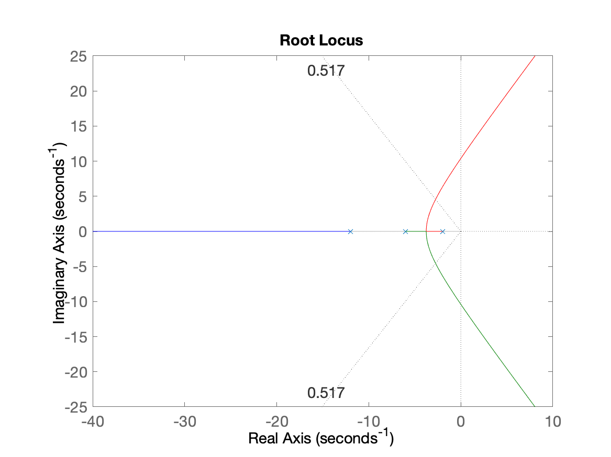
Controle Proporcional para resposta criticamente amortecida
Sintonizado (definindo ganho do) Controlador para resposta criticamente amortecida:
>> axis([-8 1 -2 8]) % "zoom" na região de interesse>> [K1,polosMF]=rlocfind(G) % definindo o ponto desejadoSelect a point in the graphics windowselected_point = -3.7666 - 0.003096iK1 = 0.45118polosMF = -12.479 -3.7657 -3.7558>> axis([-13 1 -2 8]) % para mostar os 3 pólos de MF encontradosNote como ficou o RL com a definição deste valor de ganho:
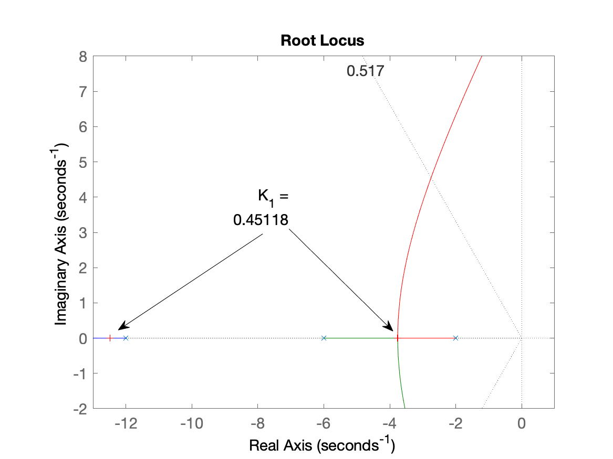
Fechando a malha a avaliando resultado obtido:
>> ftmf_k1=feedback(K1*G, 1);>> pole(ftmf_k1) % opcionalans = -12.479 -3.7657 -3.7558>> figure; step(ftmf_k1)Resposta para degrau unitário (referência adotada):
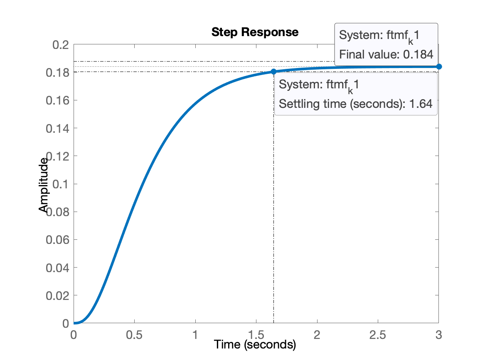
>> stepinfo(ftmf_k1) % mostra no CLI resultados obtidosans =struct with fields:RiseTime: 0.91839SettlingTime: 1.6433SettlingMin: 0.16585SettlingMax: 0.18406Overshoot: 0Undershoot: 0Peak: 0.18406PeakTime: 3.421
Repare na figura anterior, o enorme erro de regime permanente,
>> figure; step(ftmf_k1)>> ylim([0 1.1])
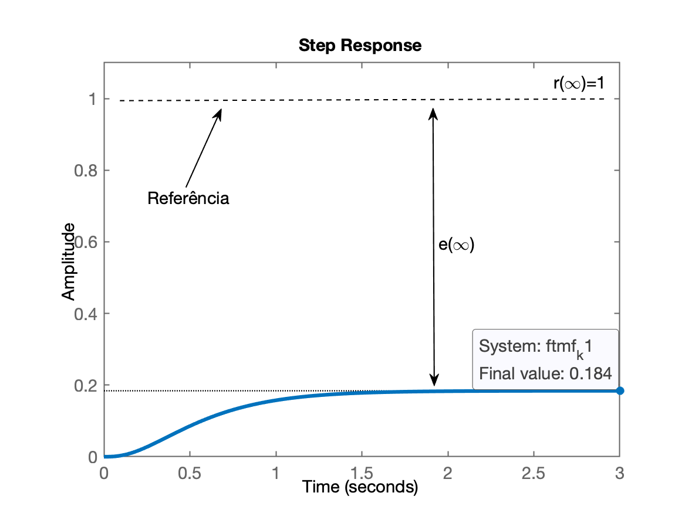
Podemos calcular o erro de regime permanente:
xxxxxxxxxx>> dcgain(ftmf_k1) % resulta o valor de y(∞)ans = 0.18407>> erro_k1=(1-dcgain(ftmf_k1))/1*100 % calculando o erro regime permanenteerro_k1 = 81.593Confirmamos que o erro é enorme, muito provavelmente não desejado, o que significa que fechar a malha com controlador Proporcional e usando este valor de ganho é intolerável. Leva a um erro inadmissível. Pelo que já estudamos em Teoria do Erro, muito provavelmente apenas elevar o ganho já vai permitir reduzir o erro de regime permanente, mas provavelmente às custas de oscilações. Para saber, só avaliando (sim... executando mais comandos, mais cálculos, 🙂↕️).
Controle Proporcional para resposta sub-amortecida
Vamos aumentar o ganho do controlador lembrado que podemos optar por resposta sub-amortecida com
xxxxxxxxxx>> [K2,polosMF]=rlocfind(G)Select a point in the graphics windowselected_point = -2.7322 + 4.517iK2 = 3.6531polosMF = -14.484 + 0i -2.7582 + 4.5271i -2.7582 - 4.5271iO RL com este ganho fica:
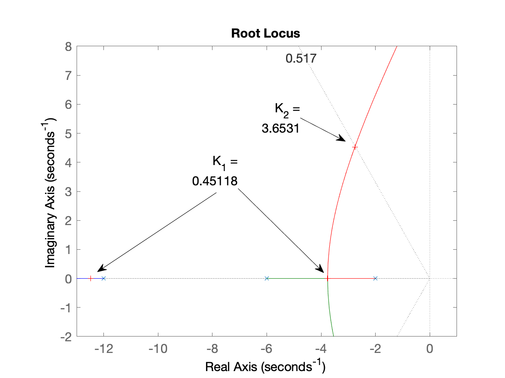
Fechando a malha com este valor de ganho para avaliar a resposta obtida:
xxxxxxxxxx>> ftmf_k2=feedback(K2*G, 1);>> pole(ftmf_k2)ans = -14.484 + 0i -2.7582 + 4.5271i -2.7582 - 4.5271i>> figure; step(ftmf_k2)>> ylim([0 1.1]) % definindo uma região de interesse (opcional)Resposta obtida para este novo valor de ganho:
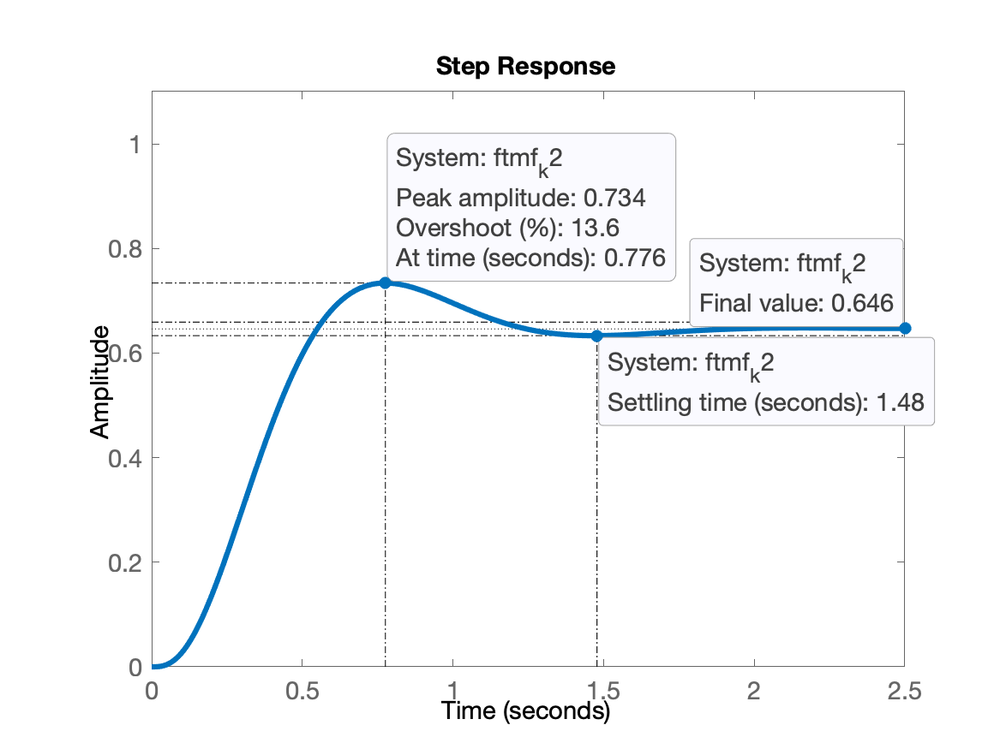
Notamos que:
Erro (de regime permanente) foi reduzido (mas ainda é elevado,
O overshoot calculado (e mostrado) pelo Matlab se refere ao valor de regime permanente atingido pela planta (
Através de várias tentativas e erro podemos tentar encontrar um novo valor de ganho para tentar alcançar
Controle Proporcional Limitando Erro
O objetivo agora é manter erro abaixo de 10%. Eventualmente às custas de certo
Com base na Teoria do Erro, temos que:
onde:
Isolando
Neste caso, foi especificado erro máximo de 10%,
xxxxxxxxxx>> Kp=(1-0.1)/0.1Kp = 9Temos que calcular agora o
onde:
Neste caso em particular:
Note:
xxxxxxxxxx>> 2*6*12ans =144
Como é desejado
então finalmente:
Testando no Matlab:
xxxxxxxxxx>> K3=18;>> figure; rlocus(G)>> ftmf_k3=feedback(K3*G, 1);>> polos_MF=pole(ftmf_k3)polos_MF = -18.386 + 0i -0.80711 + 8.8131i -0.80711 - 8.8131i>> figure(4)>> hold on;>> plot(real(polos_MF), imag(polos_MF), "r+", 'MarkerSize', 12) % (opcional) mostra onde foram parar os pólos de MF para K3RL obtido neste caso:
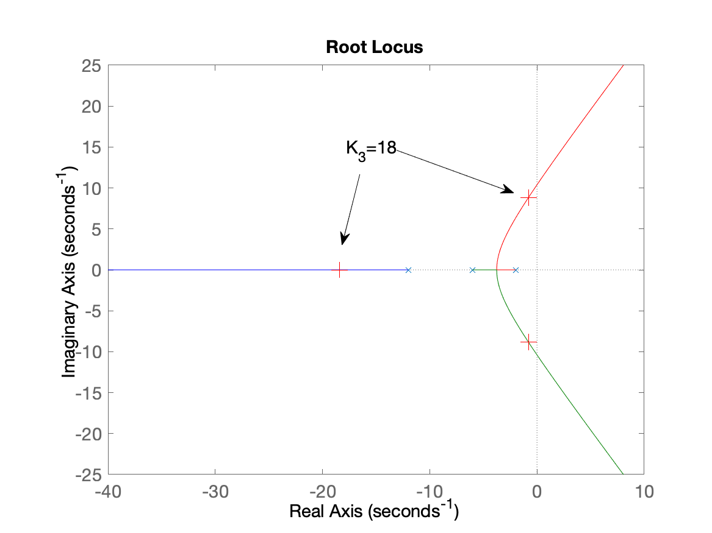
Fechando malha com este ganho
xxxxxxxxxx>> figure; step(ftmf_k3)Resposta em MF para degrau unitário na entrada:
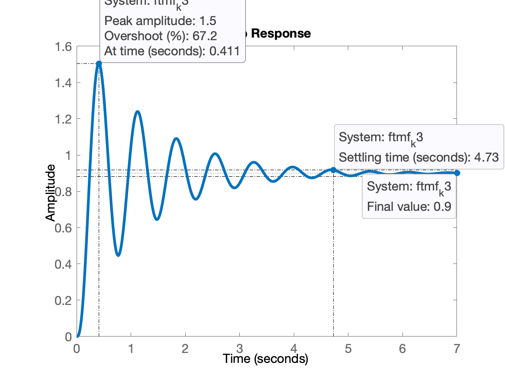
Repare que:
Resposta bastante oscilatória, com overshoot (alguns picos ultrapassando o valor 1,0);
Mas... erro limitado à 10% ✔
Resumo gráfico Controladores Proporcionais
xxxxxxxxxx>> figure; step(ftmf_k2, ftmf_k3)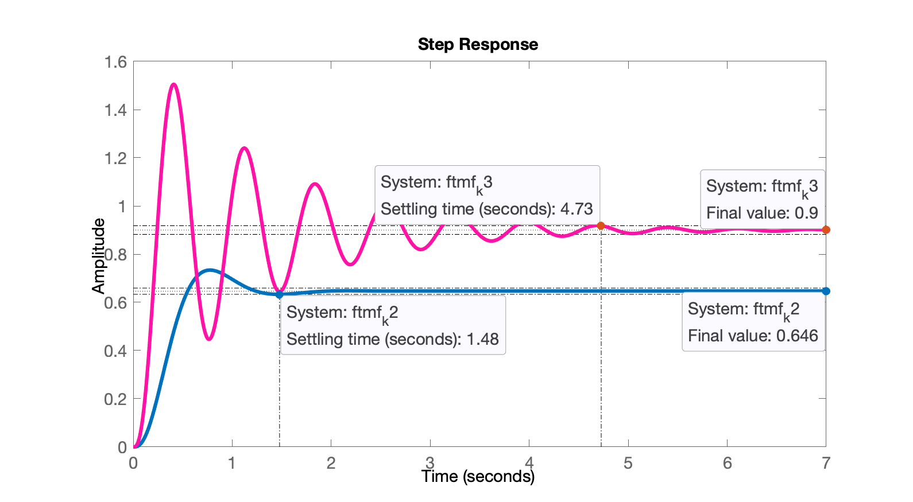
Este último gráfico nos apresenta um panorama geral dos resultados que podem ser obtidos fechando a malha apenas com Controlador Proporcional para este tipo de planta.
Notamos, entre outros detalhes, que este controlador para este tipo de planta nunca vai eliminar o erro de regime permanente. A única forma de eliminar este erro, é transformando a
2) Controlador Somente Ação Integral
Equação:
Objetivo: zerar erro de regime permanente com a introdução do integrador na
Usando Matlab:
xxxxxxxxxx>> C_I=tf(1,[1 0])
C_I = 1 - s Continuous-time transfer function.
>> ftma_i=C_I*G % calculando a nova FTMA(s)
ftma_i = 72 ------------------------------ s^4 + 20 s^3 + 108 s^2 + 144 s Continuous-time transfer function.
>> zpk(ftma_i)
ans = 72 -------------------- s (s+12) (s+6) (s+2) Continuous-time zero/pole/gain model.
>> close all % fechar janelas gráficas>> rlocus(ftma_i)>> hold on; sgrid(zeta,0)Temos agora um novo RL, já que o acréscimo de um pólo ao sistema anterior, elevou a ordem do sistema para 4a-ordem, resultando obviamente num RL diferente (outro comportamento para o sistema em MF):
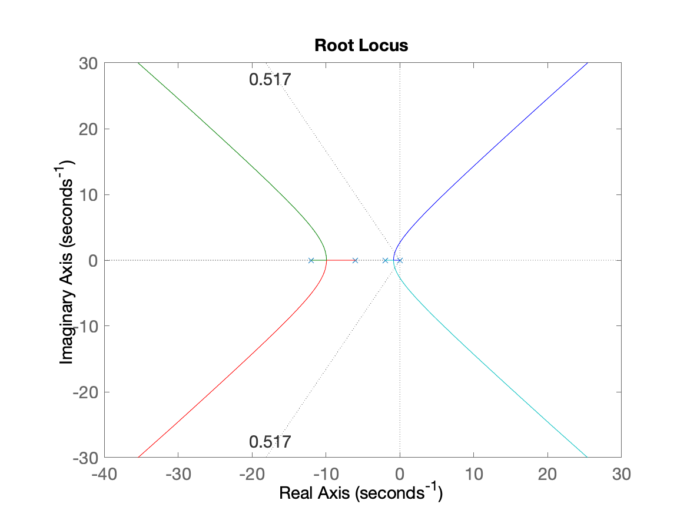
Realizando zoom na região de interesse e definindo valores de ganho:
xxxxxxxxxx>> axis([-3 1 -2 5])>> >> [K_i1,polosMF]=rlocfind(ftma_i) % ganho para resposta criticamente amortecidaSelect a point in the graphics windowselected_point = -0.86256 + 0.004644iK_i1 = 0.7797polosMF = -11.92 + 0i -6.359 + 0i -0.86059 + 0.0042019i -0.86059 - 0.0042019i>> [K_i2,polosMF]=rlocfind(ftma_i) % ganho para resposta com overshoot de 15%Select a point in the graphics windowselected_point = -0.68246 + 1.1316iK_i2 = 1.9711polosMF = -11.787 + 0i -6.8319 + 0i -0.69035 + 1.1339i -0.69035 - 1.1339iRL resultante após definição dos ganhos:
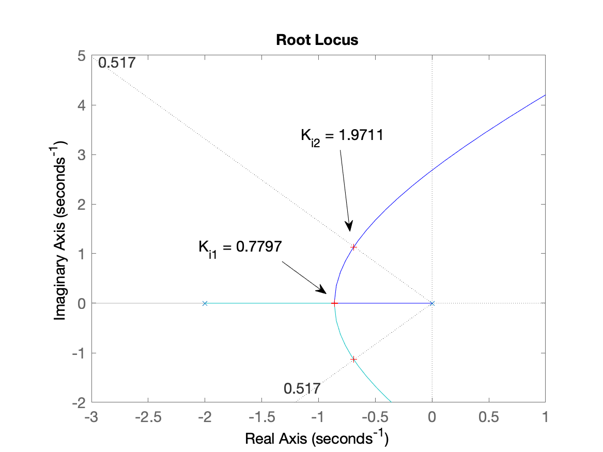
Fechando a malha e comprovando resultados obtidos:
xxxxxxxxxx>> ftmf_i1=feedback(K_i1*ftma_i, 1);>> ftmf_i2=feedback(K_i2*ftma_i, 1);>> >> figure; step(ftmf_i1, ftmf_i2)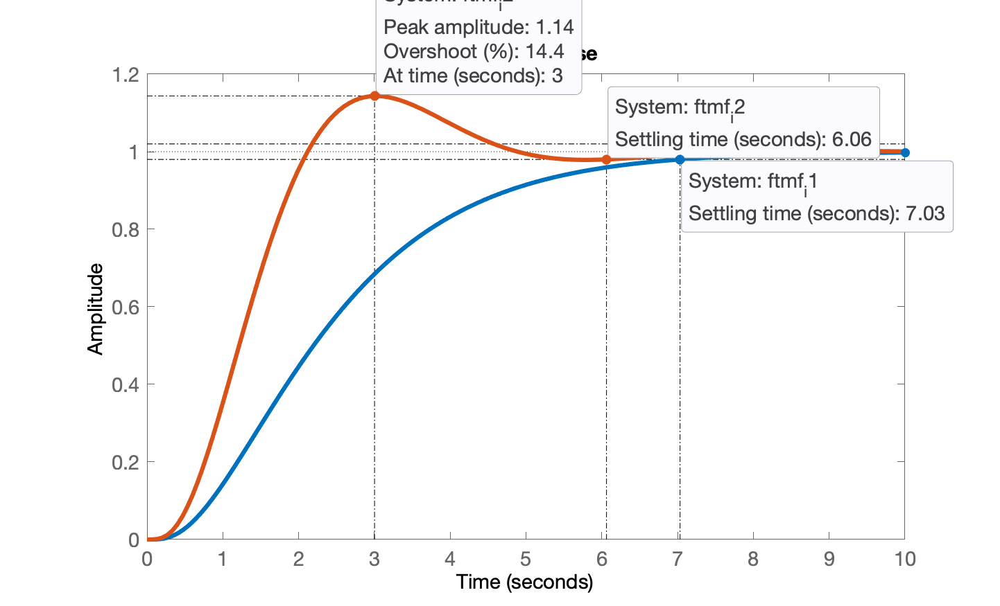
Comparando Integrador "puro" com Proporcional
Comparando com controlador proporcional (erro de 10%):
xxxxxxxxxx>> figure; step(ftmf_k3, ftmf_i1, ftmf_i2)>> legend('Kp (erro 10%)', 'I_1 (sem overshoot)', 'I_2 (com overshoot)')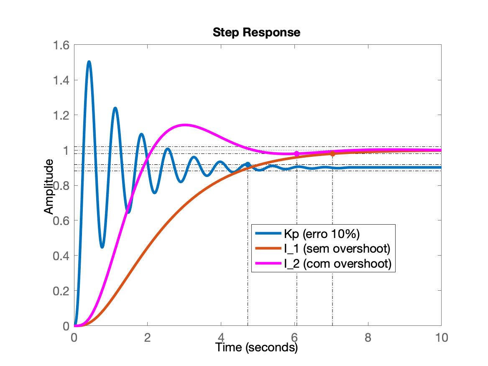
Note:
O último controlador proporcional proposto, apesar de bastante oscilatório, ainda é mais rápido que estes integradores puros.
E aqui está um detalhe: normalmente não se usa Controlador que seja um Integrador Puro, justamente porque apesar de zerar o erro de regime permanente, ocorre um grande atraso na resposta. Motivo pelo qual se usa açao integral combinada (em paralelo) com ação integral, o famoso "PI" ou seja: P
Encerrando Seção de Trabalho
Como vamos continuar avaliando outros controladores para esta mesma planta, vamos armazeanar os valores obtidos para facilitar a continuação e comparação de resultados para as próximas aulas.
xxxxxxxxxx>> save planta % salva variáveis (workspace) atual (mas não as figuras)>> diary off % encerra o dump file>> quit % sai do MatlabAquivo > planta.mat.
Próxima aula: 14/05/2026.
Fernando Passold, em 07/05/2026